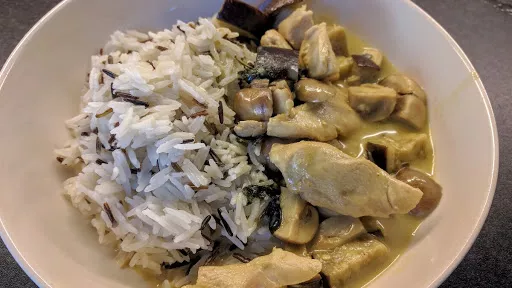

Thai green curry

Servings: 2
Total: 10 mins
Ingredients
- 400 g chicken breast, thinly sliced
- ½ tbsp vegetable oil
- 200 g aubergine, cubed
- 200 g mushrooms, chopped
- Blue dragon thai green curry pack
- fish sauce
- pinch of caster sugar
- ½ mug rice
Instructions
- Heat the oil in a large pan or wok. Fry the
chicken400 g
on a high heat until cooked through. Whilst the chicken400 g
is cooking, cook the rice½ mug
.
- Reduce the heat to medium and add the curry paste. Gently cook for a minute to release the flavours and aromas.
- Add the coconut milk and bring to the boil.
- Add the vegetables and other dry ingredients and simmer for about 10 minutes until they are all infused with the flavours and cooked through.
- Serve with the
rice½ mug
.
Blue Dragon Thai Green Curry
Short Link
Long Link